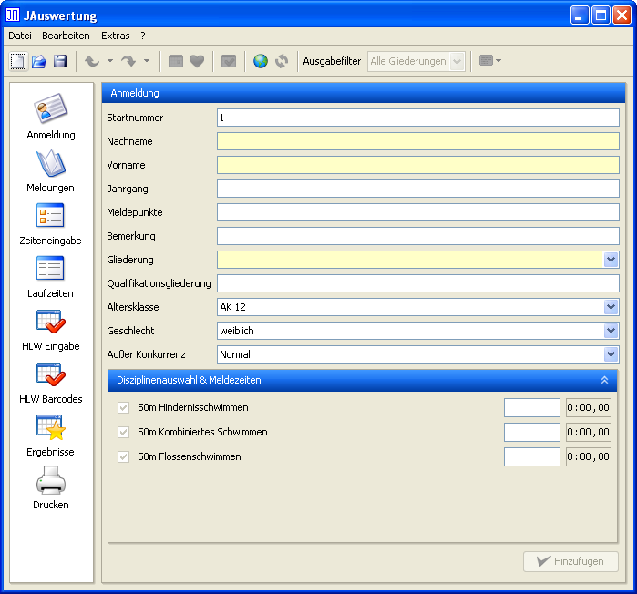

Die Benutzeroberfläche von JAuswertung teilt sich in vier Bereiche:
Die Menüs
Die obere Knopfleiste
Die linken Knopfleisten
Die Eingabebereiche
Über die linken Knopfleisten können Sie auswählen, welche Eingaben Sie gerade durchführen wollen. Die rechts daneben liegenden Eingabebereiche werden dann entsprechend umgestellt. Die obere Knopfleiste (direkt über den linken Knopfleisten und den Eingabebereichen) dient dazu, häufig genutzte Funktionen der Menüs direkt zugänglich zu machen. Alle weiteren Funktionen sind über die Menüs zu erreichen.

JAuswertung